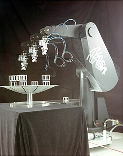
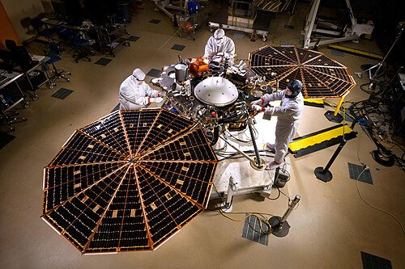
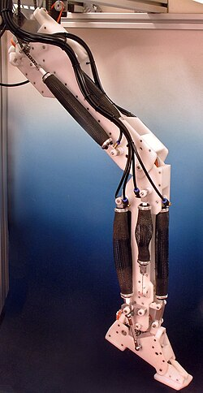
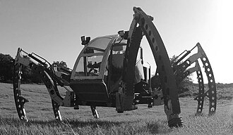
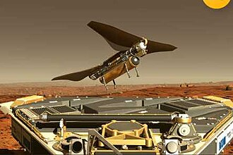
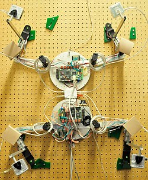
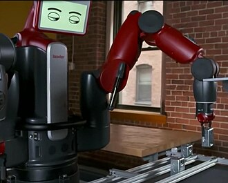
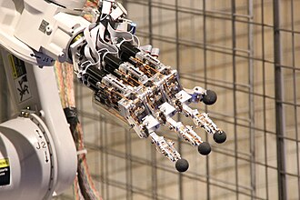

Robotics

Robotics is the interdisciplinary study and practice of the design, construction, operation, and use of robots.[1] A roboticist is someone who specializes in robotics.[2] Robotics usually combines four aspects of design work: a power source (e.g. a battery), mechanical construction, a control system (electrical circuits), and software (run by remote control or artificial intelligence).
The goal of most robotics is to design machines that can assist humans in various fields, such as agriculture, construction, domestic work, food processing, inventory management, manufacturing, medicine, military, mining, space exploration, and transportation.
Robots impact humans by displacing workers. Some expect this to occur at an increasing rate, leading to proposed solutions such as basic income. Robotics is itself a lucrative business that creates careers, especially for postgraduates. Roboticists often aim to create machines that seem to interface naturally with humans. The field is under active research and development, with areas of interest including robot kinematics and quantum robotics.
Design
[edit]Robotics usually combines four aspects of design work to create a robot:
- Power source: Potential energy sources include wired electricity, a battery, and/or petrol.
- Mechanical construction: A physical form or combination of forms is designed to functionally achieve tasks within a given range of environments. This can include locomotive elements such as wheels and caterpillar tracks, as well as hydraulic limbs and manipulators (e.g. hands).
- Control system: Electrical circuits (utilizing components such as diodes and transistors) are used to run software, govern motor movement, and read sensors.
- Software: A program is how a robot decides when or how to do something. Robotic programs can be run by remote control, artificial intelligence (AI), or a hybrid of the two. AI programming is an important part of robotic navigation and human–robot interaction.
Power source
[edit]
Many different types of batteries can be used as a power source. Most are lead–acid batteries, which are safe and have relatively long shelf lives but are rather heavy compared to silver–cadmium batteries, which are much smaller in volume and much more expensive. Designing a battery-powered robot needs to take into account factors such as safety, cycle lifetime, and weight.
Generators, often some type of internal combustion engine, can also be used, but are often mechanically complex and inefficient. Additionally, a tether could connect the robot to a power supply, saving weight and space, but requiring a cumbersome cable.[3] Potential power sources include:
- Flywheel energy storage
- Hydraulics
- Nuclear
- Organic garbage (through anaerobic digestion)
- Pneumatics (compressed gases)
- Solar power
Mechanical construction
[edit]
Actuators convert stored energy into movement.[4] They are generally limited to the location of a joint, as compared to the muscles of a biological organism, forcing robot designers to be creative to maximize power without breaking parts.[5]
The most popular actuators are electric motors that rotate a wheel or gear[6] and linear actuators that control factory robots. Most robots use electric motors, often brushed and brushless DC motors in portable robots[5] or AC motors in industrial robots and computer numerical control machines (especially in systems with lighter loads and predominantly rotational motion). Meanwhile, linear actuators simply move in and out (being used in industrial applications). They are typically powered by oil or compressed air,[7][8] but can also be powered by electricity, usually via a motor and a leadscrew.[9] The mechanical rack and pinion is common in large gantry robots.[10]
Recent alternatives to DC motors are piezoelectric motors, including ultrasonic motors, in which tiny piezoceramic elements vibrate many thousands of times per second, causing linear or rotary motion. One type uses the vibration of the piezo elements to step the motor in a circle or a straight line;[11] another type uses the piezo elements to vibrate a nut or drive a screw. The advantages of these motors are nanometer resolution, speed, and force for their size.[12][13][14]
Series elastic actuation (SEA) relies on introducing intentional elasticity between the motor actuator and the load for robust force control. Due to the resultant lower reflected inertia, series elastic actuation improves safety during robot interactions or collisions.[15] Further, it provides energy efficiency and shock absorption (mechanical filtering) while reducing excessive wear on the transmission and other components. This approach has successfully been employed in various robots, particularly advanced manufacturing robots[16] and walking humanoid robots.[17][18] The controller design of a series elastic actuator is most often performed within the passivity framework as it ensures the safety of interaction with unstructured environments.[19] However, this framework suffers from stringent limitations imposed on the controller, which may impact performance.[20][verification needed]
Pneumatic artificial muscles, also known as air muscles, are special tubes that expand (typically up to 42%) when air is forced inside them; they are used in some robot applications.[21][22][23] Muscle wire, also known as shape memory alloy, is a material that contracts (under 5%) when electricity is applied; they have been used for some small robots.[24][25] Electroactive polymers are a plastic material that can contract substantially (up to 380% activation strain) from electricity and have been used in the facial muscles and arms of humanoid robots,[26] as well as to enable new robots to float,[27] fly, swim or walk.[28] Additionally, elastic carbon nanotubes are a promising experimental artificial muscle technology. The absence of defects in carbon nanotubes enables these filaments to deform elastically by several percent, with energy storage levels of perhaps 10 J/cm3 for metal nanotubes. Human biceps could be replaced with wire of this material measuring 8 millimetres (3⁄8 in) in diameter, feasibly allowing future robots to outperform humans.[29]
Locomotion
[edit]Robots with only one or two wheel(s) can have advantages such as greater efficiency, reduced parts, and navigation through confined areas. A one-wheeled robot balances on a round ball; Carnegie Mellon University's Ballbot is the approximate height and width of a person.[30][31] Several attempts have also been made to build spherical robots (also known as orb bots[32] or ball bots),[33] which move by spinning a weight inside the ball[34][35] or rotating outer shells.[36][37] Two-wheeled balancing robots generally use a gyroscope to detect how much a robot is falling and drive the wheels proportionally up to hundreds of times per second to counterbalance the fall, based on inverted pendulum dynamics.[38][39] NASA's Robonaut has been mounted to a Segway for a similar effect.[40] Most mobile robots have four wheels or continuous tracks. Six wheels can give better traction in outdoor terrain, while tracks provide even more grip. Tracked wheels are common for outdoor off-road robots, but are difficult to use indoors.[41] A small number of skating robots have been developed, one of which is a multimodal walking and skating device with four legs and unpowered wheels.[42][43]

Several robots have been made that can walk on two legs, but not yet as reliably as a human.[44] Many other robots have been built that walk on more than two legs, being significantly easier.[45][46] Walking robots could be used for uneven terrains, providing a high degree of mobility and efficiency, but two-legged robots can currently only handle flat floors or perhaps stairs. Some approaches have included:
- The zero moment point (ZMP) is the algorithm used by robots such as Honda's ASIMO. The robot's onboard computer tries to keep the total inertial forces (the combination of Earth's gravity and the acceleration and deceleration of walking) exactly opposed by the floor reaction force (the force of the floor pushing back on the robot's foot). In this way, the two forces cancel out, leaving no moment (force causing the robot to rotate and fall over).[47] Human observers note that this is not exactly how a human walks, with some describing ASIMO's walk as looking like it needs use the bathroom.[48][49][50] ASIMO's walking algorithm utilizes some dynamic balancing, but requires a flat surface.
- Several robots, built in the 1980s by Marc Raibert at the MIT Leg Laboratory, successfully demonstrated very dynamic walking. Initially, a robot with only one leg, and a very small foot could stay upright simply by hopping. The movement is the same as that of a person on a pogo stick. As the robot falls to one side, it would jump slightly in that direction to catch itself.[51] Soon, the algorithm was generalized to two and four legs. A bipedal robot was demonstrated running and even performing somersaults.[52] A quadruped was also demonstrated which could trot, run, pace, and bound.[53][54]
- A more advanced approach is a dynamic balancing algorithm, which constantly monitors the robot's motion and places the feet to maintain stability.[55] This technique has been demonstrated by Anybots' Dexter robot[56] (which is so stable it can perform jumps)[57] and Delft University's Flame.
- Perhaps the most promising approach uses passive dynamics, in which the momentum of swinging limbs is used to power walking, perhaps increasing efficiency to ten times that of ZMP.[58][59]

A modern passenger airliner is essentially a flying robot, with two humans to manage it. The autopilot can control the plane through takeoff, normal flight, and landing.[60] Unmanned aerial vehicles (UAVs) can be smaller and lighter and fly into dangerous territory for military use, perhaps even being triggered to fire automatically. Other flying robots include cruise missiles, the entomopter, and the Epson micro helicopter robot. Additionally, some lighter-than-air robots are propelled by paddles and guided by sonar.
Biomimetic flying robots (BFRs) take inspiration from flying mammals, birds, or insects. They can have flapping wings, which generate the lift and thrust, or they can be propeller-actuated. Flapping-wing designs have increased maneuverability and reduced energy consumption compared to propeller actuation.[61] BFRs inspired by mammals and birds share similar flight characteristics and design considerations. For instance, they minimize edge fluttering and pressure-induced wingtip curl by increasing the rigidity of the wing edge.
- Mammal-inspired BFRs typically take inspiration from bats, with the flying squirrel also inspiring a prototype.[62][63][64] Mammal-inspired BFRs can be designed to be multimodal; being capable of both flight and terrestrial movement. Shock absorbers can be implemented to reduce the impact of landing.[64] Alternatively, the BFR can pitch up and increase the amount of drag.[62] Different land gait patterns can also be implemented.[62]
- Bird-inspired BFRs can take inspiration from raptors, gulls, and others.[65][66] They can be feathered to increase the angle of range over which the robot can operate before stalling.[67] The wings of bird-inspired BFRs allow for in-plane deformation, which can be adjusted to maximize flight efficiency depending on the flight gait.[67]
- Insect-inspired BFRs typically take inspiration from beetles or dragonflies.[68][69][70]

Several different approaches have been used to develop robots that have the ability to climb vertical surfaces. One approach mimics the movements of a human climber on a wall with protrusions; adjusting the center of mass and moving each limb in turn to gain leverage.[71] Another approach uses the specialized toe-pad method of wall-climbing geckoes, which can run on smooth surfaces such as vertical glass,[72][73] one example being named Speedy Freelander. A third approach is to mimic the motion of a snake climbing a pole.[74] Separately, snake robots can be used for horizontal navigation, possibly being able to search through confined spaces[75] and navigate amphibiously.[76][77]
It is calculated that when swimming, some fish can achieve a propulsive efficiency greater than 90%.[78] Furthermore, they can accelerate and maneuver far better than any man-made boat or submarine and cause less disturbance, being a desirable ability for aquatic robots,[79][80] one of which models fish locomotion.[81] One example copies the streamlined shape and propulsion of the front 'flippers' of penguins.[82] Others emulate the locomotion of the manta ray and jellyfish. In 2013, a robotic fish outperformed some real fish in average maximum velocity and endurance.[83][84][85]
Sailboat robots, such as Vaimos, have been developed in order to make measurements at the surface of the ocean.[86] Since saiboat robots are wind-propelled, the batteries only power the computer, communication and actuators (to tune the rudder and sail). Two major sailboat robot competitions occur at the Microtransat Challenge and the World Robotic Sailing Championship.
Manipulators
[edit]

A definition of robotic manipulation has been described by Matthew T. Mason as the robot's "control of its environment through selective contact".[87] Robots need to manipulate objects; pick up, modify, destroy, move or otherwise have an effect. Thus a robotic arm is referred to as a manipulator[88] and its functional end (e.g. a tool or hand) is known as an end effector.[89] Most robot arms have replaceable end effectors, each allowing them to perform some small range of tasks. Some have a fixed manipulator that cannot be replaced, including highly versatile manipulators like a humanoid hand.[90][91][92] Some of these have powerful dexterity intelligence, up to 20 degrees of freedom, and hundreds of tactile sensors.[93]
One of the most common types of end effectors are 'grippers'. In its simplest manifestation, it consists of just two fingers that can open and close to pick up and let go of small objects. Fingers can be made of a chain with a metal wire running through it.[94] Hands that resemble and work more like a human hand include the Shadow Hand and the Robonaut hand.[95][96][97] Mechanical grippers can come in various types, including friction and encompassing jaws. Friction jaws use all the force of the gripper to hold the object in place using friction. Encompassing jaws cradle the object in place, using less friction.
Suction end effectors, powered by vacuum generators, are very simple astrictive[98] devices that can hold very large loads provided the prehension surface is smooth enough to ensure suction. Pick-and-place robots for electronic components and for large objects like car windscreens, often use very simple vacuum end effectors. Suction is a highly used type of end effector in industry, in part because the natural compliance of soft suction end effectors can be less likely to damage objects.
Control system
[edit]
The mechanical structure of a robot must be controlled to perform tasks.[99] The control of a robot involves three distinct phases – perception, processing, and action (robotic paradigms).[100] Sensors give information about the environment or the robot itself (e.g. the position of its joints or its end effector).[101] This information is then processed to be stored or transmitted and to calculate the appropriate signals to the actuators (motors), which move the mechanical structure to achieve the required coordinated motion or force actions.
The processing phase can range in complexity. At a reactive level, it may translate raw sensor information directly into actuator commands (e.g. firing motor power electronic gates based directly upon encoder feedback signals to achieve the required torque/velocity of the shaft). Sensor fusion and internal models may first be used to estimate parameters of interest (e.g. the position of the robot's gripper) from noisy sensor data. An immediate task (such as moving the gripper in a certain direction until an object is detected with a proximity sensor) is sometimes inferred from these estimates. Techniques from control theory are generally used to convert the higher-level tasks into individual commands that drive the actuators, most often using kinematic and dynamic models of the mechanical structure.[99][100][102]
At longer time scales or with more sophisticated tasks, the robot may need to build and reason with a cognitive model, which try to represent the robot, the world, and how the two interact. Pattern recognition and computer vision can be used to track objects.[99] Mapping, motion planning and other AI techniques may be used to figure out how to act and avoid obstacles.
Robotic control systems integrate multiple sensors and effectors, have many interacting degrees of freedom and require operator interfaces, programming tools and real-time capabilities.[100] They are often connected to wider communication networks, including the Internet of things, a network correlating physical objects.[103] Progress towards open architecture, layered, user-friendly and 'intelligent' sensor-based interconnected robots has emerged from earlier concepts related to flexible manufacturing systems. Further, several 'open or 'hybrid' reference architectures provide advantages over prior 'closed' robot control systems.[102] Open-architecture controllers are said to be better able to meet the growing requirements of a wide range of robot users, including system developers, end users and research scientists, and are better positioned to contribute advanced industrial concepts.[102] In addition to utilizing many established features of robot controllers, such as position, velocity and force control of end effectors, they[clarification needed] also enable interconnection and the implementation of more advanced sensor fusion and control techniques, including adaptive control, fuzzy control and artificial neural network–based control.[102] When implemented in real time, such techniques can potentially enable more adaptive control systems when working in unfamiliar environments.[104] Generic reference architecture and associated interconnected, open-architecture robot and controller implementation has been used in a number of studies.[104][105]
Sensing
[edit]
Sensors allow robots to receive information about the environment or internal components. This is essential for robots to perform their tasks and respond to changes with the appropriate response. Sensors are used for various forms of measurements, to provide real-time information, and to give the robots warnings; they can include cameras and microphones, as well as those that monitor network signals, power level, pressure, and temperature.
Current robotic and prosthetic hands receive far less tactile information than the human hand. Recent research has developed a tactile sensor array that mimics the mechanical properties and touch receptors of human fingertips.[106][107] The sensor array is constructed as a rigid core surrounded by conductive fluid contained by an elastomeric skin. Electrodes are mounted on the surface of the rigid core and connected to an impedance-measuring device within the core. When the artificial skin touches an object, the fluid path around the electrodes is deformed, producing impedance changes that map the forces received from the object. An important function of artificial fingertips will likely be adjusting the grip on held objects. Scientists from several European countries and Israel developed a prosthetic hand in 2009 which functions like a real one—allowing patients to write, type on a keyboard, and perform other fine movements. The prosthesis has sensors which enable the patient to sense through its fingertips.[108]
Other common forms of sensing in robotics use lidar, radar, and sonar.[74] Lidar measures the distance to a target by illuminating the target with laser light and measuring the reflected light with a sensor. Radar uses radio waves to determine the range, angle, or velocity of objects. Sonar uses sound propagation to navigate, communicate with or detect objects on or under the surface of the water. More abstractly, robot forms inspired by origami are designed to sense and analyze in extreme environments.[109]
Cameras can capture visible light and other forms of electromagnetic radiation such as infrared. Multiple sensors and particular lenses may be used to achieve a certain field of view and depth perception. Computer vision has increasingly utilized machine learning.[110] Barcode scanning may be utilized, but is not necessarily universally effective.[111]
Software
[edit]
A program is how a robot decides when or how to do something. Specific motions can be designed via computer animation software such as Autodesk Maya.[112] Programs can be run by remote control, AI, or a hybrid of the two.
A robot with remote-control programming, possibly operated by haptic or teleoperated devices, has a preexisting set of commands that it will perform when it receives a signal from a control source—essentially a form of automation that humans have extensive control over.
Meanwhile, AI-supported autonomous robots operate without a control source and use their programming to determine responses to various stimuli.[113] Highly predictable machines, such as industrial robots, typically do not require complex cognition.
Hybrid robots may be assisted by an operator who selects certain modes or commands general actions, with AI determining the necessary motions.[114]
Human–robot interaction
[edit]For effective use in domestic environments, the way robots receive commands should be intuitive even for people with no technological skillset. Science-fiction authors and futurists often envision humans communicating with robots via speech, gestures, and facial expressions [115] rather than a command-line interface.[116][117] Studies have shown that, for some people, interacting with a robot or imagining doing so can reduce negative feelings they may have about robots,[118] but this can also bolster strong negative prejudices.[118] Researchers are trying to create robots that demonstrate personality,[119][120] regardless of whether this is desirable in commercial machines.[121] Sounds, facial expressions, and body language can be used to convey emotions, e.g. in the toy robot dinosaur Pleo (c. 2006).[122] Further, robots may incorporate awareness of personal space to their interactions.
Other hurdles exist when a voice is used to interact with humans. For social reasons, synthetic voice proves suboptimal as a communication medium,[123] making it necessary to develop the emotional component of robotic voice through various techniques.[124][125] One of the earliest examples is a teaching robot developed in 1974 by Michael J. Freeman,[126][127] who converted digital memory to rudimentary verbal speech via pre-recorded computer discs.[128] Freeman's robot was programmed to teach students in The Bronx, New York.[128]
Meanwhile, recognizing human speech in real time is a difficult task for a computer, mostly because of speech's great variability.[129] The sound of a word can vary greatly depending on accent, acoustics, volume, the previous word spoken, and the speaker's health.[130] Strides have been made in the field since the first "voice input system" was designed in 1952.[131] By the end of the 20th century, the best systems could recognize continuous, natural speech up to 160 words per minute with 95% accuracy.[132] AI-assisted machines can use voice to identify emotions.[133] Social robots will likely need to be able to recognize gestures (and perhaps perform them) to assist verbal communication.[134][135] The processing and simulation of emotions by AI is known as affective computing.

A robot should be able to interact with a human appropriately based upon their facial expressions and body language. Expressive synthetic faces have been constructed by Hanson Robotics using an elastic polymer (rubber) skin mesh animated by subsurface motors (servos), which are in turn embedded on a metal skull.[136] Robots like Kismet can produce a range of facial expressions to engage in meaningful social exchanges.[137][138] The interactive Robin the Robot similarly uses AI-based analysis and displays emotions to try to overcome exhibitions of stress and anxiety.[139]
Developments in autonomy
[edit]
Robots that can operate autonomously in a dynamic environment require a combination of mapping and navigation hardware and software to traverse their environment and avoid colliding with other objects. Besides humanoids such as ASIMO and Meinü robots, this particularly applies to self-driving cars, which variously employ the Global Positioning System (GPS), radar, lidar, cameras, an inertial navigation system and/or swarms of autonomous robots.[140]
By 2025, Figure AI developed a vision–language–action model that can control two humanoid robots at once.[141] By the next year, MIT developed a predictive technique allowing humanoid robots to think ahead instead of having to recalibrate in real-time as the environment changes; this increased their speed by two or three times while slightly decreasing their accuracy.[142]
Applications
[edit]Current and potential applications of robots include:
- Agriculture,[143] closely linked to the concept of AI-assisted precision agriculture and drone usage[144]
- AI art creation[145]
- Construction, utilizing humanoid robots, robotic arms, or robotic exoskeletons[146]
- Domestic work such as lawn mowing, vacuum cleaning, and (via humanoid robots) baking and dishwasher operation[147][148][149]
- Education about programming, often as early as middle school[150]
- Electric resistance welding
- Energy applications including cleanup of nuclear contaminated areas[a] and cleaning solar panel arrays
- Food and beverage processing, as well as commercial dishwashing[152][153]
- Industrial robots for manufacturing and assembly
- Logistics and inventory management including palletizing, operating pallet jacks and forklifts, opening and breaking down boxes, and stocking shelves[154][155][156][157]
- Medical robots and robot-assisted surgery designed and used in clinics[158]
- Military robots
- Mining
- Robot sports, including combat and racing (including drone racing)
- Space exploration, including Mars rovers
- Transportation, including airplane autopilot and self-driving cars
Employment concerns
[edit]
The incorporation of robots into industries has increased efficiency and productivity. It is typically seen as a long-term investment for benefactors and perhaps even an essential component of manufacturing. However, it has the potential of replacing most of the work performed by humans, with a 2017 study finding that automation alone puts 47% of US jobs at eventual risk.[159] Robotics is thus often used as an argument for basic income to replace lost wages. Theoretical physicist Stephen Hawking observed in 2016:[160]
The automation of factories has already decimated jobs in traditional manufacturing, and the rise of artificial intelligence is likely to extend this job destruction deep into the middle classes, with only the most caring, creative or supervisory roles remaining.
According to the Robotic Industries Association US data, in 2016 the automotive industry was the main customer of industrial robots with 52% of total sales.[161] They can perform over half of the labor in the auto industry, including heavy duty such as car assembly.[162] By 2003, an IBM keyboard manufacturing factory in Texas was fully automated as a "lights out" factory.[163] In 2026, one expert observed that most humanoid logistics robots would likely be assigned to new, streamlined facilities, rather than those originally designed for humans.[164] As of 2022, China had the greatest number of industrial robots in operation with 1.5 million units and was increasing that figure by more than 20% annually.[165]
From 2018 to 2022, Spyce Kitchen ran two robotic food-bowl restaurants in Massachusetts.[166] Since then, the Chicago-area Nala Robotics has run an automated kitchen inside a food court[167] and offered commercial dishwashing–related services.[153]
In the first half of 2026, China delivered over 40,000 humanoid robots.[168] The Donald Trump administration subsequently banned the import of new advanced robot models from China, citing security concerns,[169] while US companies prepared to deliver some of the first robots intended for domestic use.[170][171]
Safety and health
[edit]
The spread of robotics presents both opportunities and challenges for occupational safety and health (OSH).[172] Despite lost wages, the substitution of people working in unhealthy or dangerous environments is an OSH benefit. This not only includes high-risk jobs in space, security, and energy, but also dirty or unsafe work in logistics, maintenance, and inspection that requires exposure to physical and/or psychosocial risks, including those stemming from repetitive or monotonous tasks better suited to machines. Robots are likely to gradually replace such jobs in other sectors like agriculture, cleaning, construction, firefighting, healthcare, and transportation.[173]
On the other hand, humans are better suited than machines for light-duty jobs involving various levels of creativity, decision-making, and flexibility. Humans and robots increasingly work in parallel within their areas of expertise. The need to work safely in a close space has resulted in cobots (collaborative robots).[174][175] Some European countries are including robotics in their national programs, promoting healthy cooperation between robots and operators to increase productivity.[176]
Careers
[edit]Robotics is an interdisciplinary field, primarily combining mechanical engineering and computer science but also drawing on electronic engineering and other subjects. Undergraduate degrees are usually obtained in one of these subjects prior to the pursuance of a graduate degree in robotics. Robotics engineers design and maintain robots, develop new applications, and conduct research.[177] As of 2011, the number of robotics-related jobs was steadily rising as factories increasingly utilized robots.[178] According to a September 2021 GlobalData report, the robotics industry was worth US$45 billion in 2020, and by 2030 it will have grown at a compound annual growth rate of 29% to US$568 bn, driving jobs in robotics and related industries.[179]
Research
[edit]Much of the research in robotics focuses not on specific industrial tasks, but on investigations into new types of robots, alternative ways to think about or design robots, and new ways to manufacture them. In 1997, Professor Hans Moravec, principal research scientist at the Carnegie's Robotics Institute, predicted that robot intelligence would reach the capacity of a lizard by 2010, a mouse by 2020, then a monkey and finally a human by around 2045.[180]
| External videos | |
|---|---|
The study of motion can be divided into kinematics and dynamics.[181] Kinematics studies motion independent of natural forces, incorporating predictable solutions such as collision avoidance.[182][183] Direct or forward kinematics refers to the manual control of joints to manipulate end effectors, while in inverse kinematics, end-effector states are predetermined and the joint values automated.[182][183] Meanwhile, dynamics apply the effect of natural forces to kinematic motions, including phenomena such as torque.[183] Direct dynamics refers to the calculation of accelerations once the applied forces are known, used in computer simulations.[184] Inverse dynamics refers to the calculation of the actuator forces that result in certain end-effector accelerations.[185]
Open-source robotics is based upon publicly available datasets or software that can be used in the process of designing and building robots, eliminating the need to independently conduct potentially expensive and redundant research.[186]
Evolutionary robotics is a methodology that uses evolutionary computation to help design robots, especially the body form, or motion and behavior controllers. In a similar way to natural evolution, a large population of robots is allowed to compete in some way, or their ability to perform a task is measured using a fitness function. Those that perform worst are removed from the population and replaced by a new set with behaviors based on those of the winners. Over time the population improves and eventually a satisfactory robot may appear without direct human intervention. Researchers use this method both to create better robots[187] and to explore the nature of evolution.[188] Because the process often requires the study of many generations of robots,[189] this technique may be run entirely or mostly in simulation before testing the evolved algorithms on real robots.[190]
Bionics and biomimetics apply the physiology and methods of locomotion of animals to the design of robots. For example, the design of BionicKangaroo was based on the way kangaroos jump.
Swarm robotics is an approach to the coordination of multiple robots as a system which consist of large numbers of mostly simple physical robots.
Quantum robotics is the study of running robotic programs on quantum computers, which will likely outperform digital computers.[191]
Additional general areas of study include cobots,[192] drones, and nanorobots. Two major academic conferences for robotics research are the International Conference on Robotics and Automation and International Conference on Intelligent Robots and Systems.
See also
[edit]- Cloud robotics
- Cognitive robotics
- Ethics of artificial intelligence
- Fog robotics
- Glossary of robotics
- List of roboticists
- Index of robotics articles
- List of robotics companies
- List of robotics journals
- List of robotics software
- Mechatronics
- Multi-agent system
- Outline of robotics
- Roboethics
- Robotic art
- Robotic governance
- Self-reconfiguring modular robot
- Telerobotics
Notes
[edit]- ↑ One database, developed by the United States Department of Energy, contains information on almost 500 existing robotic technologies.[151]
References
[edit]- ↑ "German National Library". International classification system of the German National Library (GND). Archived from the original on 2020-08-19.
- ↑ "Roboticist Definition & Synonyms - Robotics24 Glossary". 26 September 2022. Retrieved 2026-02-12.
- ↑ Dowling, Kevin. "Power Sources for Small Robots" (PDF). Carnegie Mellon University. Archived (PDF) from the original on 2020-11-25. Retrieved 2012-05-11.
- ↑ Roozing, Wesley; Li, Zhibin; Tsagarakis, Nikos; Caldwell, Darwin (2016). "Design Optimisation and Control of Compliant Actuation Arrangements in Articulated Robots for Improved Energy Efficiency". IEEE Robotics and Automation Letters. 1 (2): 1110–1117. Bibcode:2016IRAL....1.1110R. doi:10.1109/LRA.2016.2521926. S2CID 1940410.
- 1 2 Beckendorf, Aaron (16 August 2026). "Building An Actuator For A Walking Robot". Hackaday. Retrieved 2026-08-17.
- ↑ "Actuator". Robotis. Retrieved 2026-08-17.
- ↑ "Underwater Linear Actuators". Ultra Motion. Retrieved 2026-08-17.
- ↑ "Linear Actuators & Cylinders". SMC UK. Retrieved 2026-08-17.
- ↑ "Linear Ball Screw & Lead Screw Actuators". Valin. Retrieved 2026-08-17.
- ↑ Collins, Danielle (28 February 2018). "Rack and pinion systems - designs and applications". Linear Motion Tips. Retrieved 2026-08-17.
- ↑ "Piezo LEGS – -09-26". Archived from the original on 2008-01-30. Retrieved 2007-10-28.
- ↑ "Squiggle Motors: Overview". Archived from the original on 2007-10-07. Retrieved 2007-10-08.
- ↑ Nishibori; et al. (2003). "Robot Hand with Fingers Using Vibration-Type Ultrasonic Motors (Driving Characteristics)". Journal of Robotics and Mechatronics. 15 (6): 588–595. doi:10.20965/jrm.2003.p0588.
- ↑ Otake, Mihoko; Kagami, Yoshiharu; Ishikawa, Kohei; Inaba, Masayuki; Inoue, Hirochika (6 April 2001). Wilson, Alan R.; Asanuma, Hiroshi (eds.). "Shape design of gel robots made of electroactive polymer gel". Smart Materials. 4234: 194–202. Bibcode:2001SPIE.4234..194O. doi:10.1117/12.424407. S2CID 30357330.
- ↑ Pratt, G. A.; Williamson, M. M. (1995). "Series elastic actuators". Proceedings 1995 IEEE/RSJ International Conference on Intelligent Robots and Systems. Human-Robot Interaction and Cooperative Robots. Vol. 1. pp. 399–406. doi:10.1109/IROS.1995.525827. hdl:1721.1/36966. ISBN 0-8186-7108-4. S2CID 17120394.
- ↑ Furnémont, Raphaël; Mathijssen, Glenn; Verstraten, Tom; Lefeber, Dirk; Vanderborght, Bram (27 January 2016). "Bi-directional series-parallel elastic actuator and overlap of the actuation layers" (PDF). Bioinspiration & Biomimetics. 11 (1) 016005. Bibcode:2016BiBi...11a6005F. doi:10.1088/1748-3190/11/1/016005. PMID 26813145. S2CID 37031990. Archived (PDF) from the original on 2022-10-01. Retrieved 2023-03-15.
- ↑ Pratt, Jerry E.; Krupp, Benjamin T. (2004). "Series Elastic Actuators for legged robots". In Gerhart, Grant R; Shoemaker, Chuck M; Gage, Douglas W (eds.). Unmanned Ground Vehicle Technology VI. Vol. 5422. pp. 135–144. doi:10.1117/12.548000. S2CID 16586246.
- ↑ Li, Zhibin; Tsagarakis, Nikos; Caldwell, Darwin (2013). "Walking Pattern Generation for a Humanoid Robot with Compliant Joints". Autonomous Robots. 35 (1): 1–14. doi:10.1007/s10514-013-9330-7. S2CID 624563.
- ↑ Colgate, J. Edward (1988). The control of dynamically interacting systems (Thesis). hdl:1721.1/14380.
- ↑ Calanca, Andrea; Muradore, Riccardo; Fiorini, Paolo (November 2017). "Impedance control of series elastic actuators: Passivity and acceleration-based control". Mechatronics. 47: 37–48. doi:10.1016/j.mechatronics.2017.08.010.
- ↑ www.imagesco.com, Images SI Inc -. "Air Muscle actuators, going further, page 6". Archived from the original on 2020-11-14. Retrieved 2010-05-24.
- ↑ "Air Muscles". Shadow Robot. Archived from the original on 2007-09-27.
- ↑ Tondu, Bertrand (2012). "Modelling of the McKibben artificial muscle: A review". Journal of Intelligent Material Systems and Structures. 23 (3): 225–253. doi:10.1177/1045389X11435435. S2CID 136854390.
- ↑ "TALKING ELECTRONICS Nitinol Page-1". Talkingelectronics.com. Archived from the original on 2020-01-18. Retrieved 2010-11-27.
- ↑ "lf205, Hardware: Building a Linux-controlled walking robot". Ibiblio.org. 1 November 2001. Archived from the original on 2016-03-03. Retrieved 2010-11-27.
- ↑ "WW-EAP and Artificial Muscles". Eap.jpl.nasa.gov. Archived from the original on 2017-01-20. Retrieved 2010-11-27.
- ↑ "Empa – a117-2-eap". Empa.ch. Archived from the original on 2015-09-24. Retrieved 2010-11-27.
- ↑ "Electroactive Polymers (EAP) as Artificial Muscles (EPAM) for Robot Applications". Hizook. Archived from the original on 2020-08-06. Retrieved 2010-11-27.
- ↑ Madden, John D. (16 November 2007). "Mobile Robots: Motor Challenges and Materials Solutions". Science. 318 (5853): 1094–1097. Bibcode:2007Sci...318.1094M. CiteSeerX 10.1.1.395.4635. doi:10.1126/science.1146351. PMID 18006737. S2CID 52827127.
{{cite journal}}: Cite uses deprecated parameter|citeseerx=(help) - ↑ Guizzo, Erico (29 April 2010). "A Robot That Balances on a Ball". IEEE Spectrum. Archived from the original on 2023-02-10. Retrieved 2023-03-15.
- ↑ "Carnegie Mellon Researchers Develop New Type of Mobile Robot That Balances and Moves on a Ball Instead of Legs or Wheels" (Press release). Carnegie Mellon. 9 August 2006. Archived from the original on 2007-06-09. Retrieved 2007-10-20.
- ↑ "Swarm". Orbswarm.com. Archived from the original on 2021-01-26. Retrieved 2010-11-27.
- ↑ "Senior Design Projects | College of Engineering & Applied Science| University of Colorado at Boulder". Engineering.colorado.edu. 30 April 2008. Archived from the original on 2011-07-23. Retrieved 2010-11-27.
- ↑ "Spherical Robot Can Climb Over Obstacles". BotJunkie. Archived from the original on 2012-03-28. Retrieved 2010-11-27.
- ↑ "Rotundus". Rotundus.se. Archived from the original on 2011-08-26. Retrieved 2010-11-27.
- ↑ "OrbSwarm Gets A Brain". BotJunkie. 11 July 2007. Archived from the original on 2012-05-16. Retrieved 2010-11-27.
- ↑ "Rolling Orbital Bluetooth Operated Thing". BotJunkie. Archived from the original on 2012-03-28. Retrieved 2010-11-27.
- ↑ "T.O.B.B". Mtoussaint.de. Archived from the original on 2020-07-08. Retrieved 2010-11-27.
- ↑ "nBot, a two wheel balancing robot". Geology.heroy.smu.edu. Archived from the original on 2021-01-26. Retrieved 2010-11-27.
- ↑ "ROBONAUT Activity Report". NASA. 2004. Archived from the original on 2007-08-20. Retrieved 2007-10-20.
- ↑ "JPL Robotics: System: Commercial Rovers". Archived from the original on 2006-06-15.
- ↑ "Commercialized Quadruped Walking Vehicle 'TITAN VII'". Hirose Fukushima Robotics Lab. Archived from the original on 2007-11-06. Retrieved 2007-10-23.
- ↑ Pachal, Peter (23 January 2007). "Plen, the robot that skates across your desk". SCI FI Tech. Archived from the original on 2007-10-11.
- ↑ "AMBER Lab". Archived from the original on 2020-11-25. Retrieved 2012-01-23.
- ↑ "Micromagic Systems Robotics Lab". Archived from the original on 2017-06-01. Retrieved 2009-04-29.
- ↑ "AMRU-5 hexapod robot" (PDF). Archived (PDF) from the original on 2016-08-17. Retrieved 2009-04-29.
- ↑ "Achieving Stable Walking". Honda Worldwide. Archived from the original on 2011-11-08. Retrieved 2007-10-22.
- ↑ "Funny Walk". Pooter Geek. 28 December 2004. Archived from the original on 2011-09-28. Retrieved 2007-10-22.
- ↑ "ASIMO's Pimp Shuffle". Popular Science. 9 January 2007. Archived from the original on 2011-07-24. Retrieved 2007-10-22.
- ↑ "Robot Shows Prime Minister How to Loosen Up > > A drunk robot?". The Temple of VTEC – Honda and Acura Enthusiasts Online Forums. 25 August 2003. Archived from the original on 2020-04-30.
- ↑ "3D One-Leg Hopper (1983–1984)". MIT Leg Laboratory. Archived from the original on 2018-07-25. Retrieved 2007-10-22.
- ↑ "3D Biped (1989–1995)". MIT Leg Laboratory. Archived from the original on 2011-09-26. Retrieved 2007-10-28.
- ↑ "Quadruped (1984–1987)". MIT Leg Laboratory. Archived from the original on 2011-08-23. Retrieved 2007-10-28.
- ↑ "MIT Leg Lab Robots – Main". Archived from the original on 2020-08-07. Retrieved 2007-10-28.
- ↑ "About the Robots". Anybots. Archived from the original on 2007-09-09. Retrieved 2007-10-23.
- ↑ "Anything, Anytime, Anywhere". Anybots. Archived from the original on 2007-10-27. Retrieved 2007-10-23.
- ↑ "Dexter Jumps video". YouTube. 1 March 2007. Archived from the original on 2021-10-30. Retrieved 2007-10-23.
- ↑ Collins, Steve; Ruina, Andy; Tedrake, Russ; Wisse, Martijn (18 February 2005). "Efficient Bipedal Robots Based on Passive-Dynamic Walkers". Science. 307 (5712): 1082–1085. Bibcode:2005Sci...307.1082C. doi:10.1126/science.1107799. PMID 15718465. S2CID 1315227.
- ↑ Collins, S. H.; Ruina, A. (2005). "A Bipedal Walking Robot with Efficient and Human-Like Gait". Proceedings of the 2005 IEEE International Conference on Robotics and Automation. pp. 1983–1988. doi:10.1109/ROBOT.2005.1570404. ISBN 0-7803-8914-X. S2CID 15145353.
- ↑ "Testing the Limits" (PDF). Boeing. p. 29. Archived (PDF) from the original on 2018-12-15. Retrieved 2008-04-09.
- ↑ Zhang, Jun; Zhao, Ning; Qu, Feiyang (15 November 2022). "Bio-inspired flapping wing robots with foldable or deformable wings: a review". Bioinspiration & Biomimetics. 18 (1): 011002. doi:10.1088/1748-3190/ac9ef5. ISSN 1748-3182. PMID 36317380. S2CID 253246037.
- 1 2 3 Shin, Won Dong; Park, Jaejun; Park, Hae-Won (1 September 2019). "Development and experiments of a bio-inspired robot with multi-mode in aerial and terrestrial locomotion". Bioinspiration & Biomimetics. 14 (5): 056009. Bibcode:2019BiBi...14e6009S. doi:10.1088/1748-3190/ab2ab7. ISSN 1748-3182. PMID 31212268. S2CID 195066183.
- ↑ Ramezani, Alireza; Shi, Xichen; Chung, Soon-Jo; Hutchinson, Seth (May 2016). "Bat Bot (B2), a biologically inspired flying machine". 2016 IEEE International Conference on Robotics and Automation (ICRA). Stockholm, Sweden: IEEE. pp. 3219–3226. doi:10.1109/ICRA.2016.7487491. ISBN 978-1-4673-8026-3. S2CID 8581750.
- 1 2 Daler, Ludovic; Mintchev, Stefano; Stefanini, Cesare; Floreano, Dario (19 January 2015). "A bioinspired multi-modal flying and walking robot". Bioinspiration & Biomimetics. 10 (1) 016005. Bibcode:2015BiBi...10a6005D. doi:10.1088/1748-3190/10/1/016005. ISSN 1748-3190. PMID 25599118. S2CID 11132948.
- ↑ Savastano, E.; Perez-Sanchez, V.; Arrue, B.C.; Ollero, A. (July 2022). "High-Performance Morphing Wing for Large-Scale Bio-Inspired Unmanned Aerial Vehicles". IEEE Robotics and Automation Letters. 7 (3): 8076–8083. Bibcode:2022IRAL....7.8076S. doi:10.1109/LRA.2022.3185389. ISSN 2377-3766. S2CID 250008824.
- ↑ Grant, Daniel T.; Abdulrahim, Mujahid; Lind, Rick (June 2010). "Flight Dynamics of a Morphing Aircraft Utilizing Independent Multiple-Joint Wing Sweep". International Journal of Micro Air Vehicles. 2 (2): 91–106. doi:10.1260/1756-8293.2.2.91. ISSN 1756-8293. S2CID 110577545.
- 1 2 Kilian, Lukas; Shahid, Farzeen; Zhao, Jing-Shan; Nayeri, Christian Navid (1 July 2022). "Bioinspired morphing wings: mechanical design and wind tunnel experiments". Bioinspiration & Biomimetics. 17 (4): 046019. Bibcode:2022BiBi...17d6019K. doi:10.1088/1748-3190/ac72e1. ISSN 1748-3182. PMID 35609562. S2CID 249045806.
- ↑ Phan, Hoang Vu; Park, Hoon Cheol (4 December 2020). "Mechanisms of collision recovery in flying beetles and flapping-wing robots". Science. 370 (6521): 1214–1219. Bibcode:2020Sci...370.1214P. doi:10.1126/science.abd3285. ISSN 0036-8075. PMID 33273101. S2CID 227257247.
- ↑ Hu, Zheng; McCauley, Raymond; Schaeffer, Steve; Deng, Xinyan (May 2009). "Aerodynamics of dragonfly flight and robotic design". 2009 IEEE International Conference on Robotics and Automation. pp. 3061–3066. doi:10.1109/ROBOT.2009.5152760. ISBN 978-1-4244-2788-8. S2CID 12291429.
- ↑ Balta, Miquel; Deb, Dipan; Taha, Haithem E (26 October 2021). "Flow visualization and force measurement of the clapping effect in bio-inspired flying robots". Bioinspiration & Biomimetics. 16 (6): 066020. Bibcode:2021BiBi...16f6020B. doi:10.1088/1748-3190/ac2b00. ISSN 1748-3182. PMID 34584023. S2CID 238217893.
- ↑ Capuchin on YouTube
- ↑ Wallbot on YouTube
- ↑ Stanford University: Stickybot on YouTube
- 1 2 Arreguin, Juan (2008). Automation and Robotics. Vienna, Austria: I-Tech and Publishing.
- ↑ Miller, Gavin. "Introduction". snakerobots.com. Archived from the original on 2011-08-17. Retrieved 2007-10-22.
- ↑ "ACM-R5". Archived from the original on 2011-10-11.
- ↑ "Swimming snake robot (commentary in Japanese)". Archived from the original on 2012-02-08. Retrieved 2007-10-28.
- ↑ Sfakiotakis, M.; Lane, D. M.; Davies, J. B. C. (April 1999). "Review of fish swimming modes for aquatic locomotion". IEEE Journal of Oceanic Engineering. 24 (2): 237–252. Bibcode:1999IJOE...24..237S. CiteSeerX 10.1.1.459.8614. doi:10.1109/48.757275. S2CID 17226211.
{{cite journal}}: Cite uses deprecated parameter|citeseerx=(help) - ↑ Mason, Richard. "What is the market for robot fish?". Archived from the original on 2009-07-04.
- ↑ "Robotic fish powered by Gumstix PC and PIC". Human Centred Robotics Group at Essex University. Archived from the original on 2011-08-14. Retrieved 2007-10-25.
- ↑ Juwarahawong, Witoon. "Fish Robot". Institute of Field Robotics. Archived from the original on 2007-11-04. Retrieved 2007-10-25.
- ↑ "Festo – AquaPenguin". 17 April 2009 – via YouTube.
- ↑ "High-Speed Robotic Fish". iSplash-Robotics. Archived from the original on 2020-03-11. Retrieved 2017-01-07.
- ↑ "iSplash-II: Realizing Fast Carangiform Swimming to Outperform a Real Fish" (PDF). Robotics Group at Essex University. Archived from the original (PDF) on 2015-09-30. Retrieved 2015-09-29.
- ↑ "iSplash-I: High Performance Swimming Motion of a Carangiform Robotic Fish with Full-Body Coordination" (PDF). Robotics Group at Essex University. Archived from the original (PDF) on 2015-09-30. Retrieved 2015-09-29.
- ↑ Jaulin, Luc; Le Bars, Fabrice (February 2013). "An Interval Approach for Stability Analysis: Application to Sailboat Robotics". IEEE Transactions on Robotics. 29 (1): 282–287. Bibcode:2013ITRob..29..282J. CiteSeerX 10.1.1.711.7180. doi:10.1109/TRO.2012.2217794. S2CID 4977937.
{{cite journal}}: Cite uses deprecated parameter|citeseerx=(help) - ↑ Mason, Matthew T. (2001). Mechanics of Robotic Manipulation. doi:10.7551/mitpress/4527.001.0001. ISBN 978-0-262-25662-9. S2CID 5260407.
- ↑ Crane, Carl D.; Joseph Duffy (1998). Kinematic Analysis of Robot Manipulators. Cambridge University Press. ISBN 978-0-521-57063-3. Archived from the original on 2020-04-02. Retrieved 2007-10-16.
- ↑ "What is a robotic end-effector?". ATI Industrial Automation. 2007. Archived from the original on 2020-12-17. Retrieved 2007-10-16.
- ↑ G. J. Monkman, S. Hesse, R. Steinmann & H. Schunk (2007). Robot Grippers. Berlin, Germany: Wiley.
- ↑ Tijsma, H. A.; Liefhebber, F.; Herder, J. L. (2005). "Evaluation of New User Interface Features for the MANUS Robot Arm". 9th International Conference on Rehabilitation Robotics, 2005. ICORR 2005. pp. 258–263. doi:10.1109/ICORR.2005.1501097. ISBN 0-7803-9003-2. S2CID 36445389.
- ↑ Allcock, Andrew (2006). "Anthropomorphic hand is almost human". Machinery. Archived from the original on 2007-09-28. Retrieved 2007-10-17.
- ↑ "Welcome". Archived (PDF) from the original on 2013-05-10. Retrieved 2007-10-28.
- ↑ "Annotated Mythbusters: Episode 78: Ninja Myths – Walking on Water, Catching a Sword, Catching an Arrow". Archived from the original on 2020-11-12. Retrieved 2010-02-13. (Discovery Channel's Mythbusters making mechanical gripper from the chain and metal wire)
- ↑ "Robonaut hand". Archived from the original on 2020-02-22. Retrieved 2011-11-21.
- ↑ "Delft hand". TU Delft. Archived from the original on 2012-02-03. Retrieved 2011-11-21.
- ↑ M & C. "TU Delft ontwikkelt goedkope, voorzichtige robothand". TU Delft. Archived from the original on 2017-03-13. Retrieved 2011-11-21.
- ↑ "astrictive definition – English definition dictionary – Reverso". Archived from the original on 2020-04-30. Retrieved 2008-01-06.
- 1 2 3 Corke, Peter (2017). Robotics, Vision and Control. Springer Tracts in Advanced Robotics. Vol. 118. doi:10.1007/978-3-319-54413-7. ISBN 978-3-319-54412-0. ISSN 1610-7438. Archived from the original on 2022-10-20. Retrieved 2023-03-15.
- 1 2 3 Lee, C S. G.; Fu, K. S.; Gonzalez, Ralph (1987). Robotics: Control Sensing. Vis. McGraw-Hill. ISBN 978-0-07-026510-3. Archived from the original on 2023-03-15. Retrieved 2023-03-15.
- ↑ Brogårdh, Torgny (January 2007). "Present and future robot control development—An industrial perspective". Annual Reviews in Control. 31 (1): 69–79. doi:10.1016/j.arcontrol.2007.01.002. ISSN 1367-5788.
- 1 2 3 4 Short, Michael; Burn, Kevin (1 April 2011). "A generic controller architecture for intelligent robotic systems". Robotics and Computer-Integrated Manufacturing. 27 (2): 292–305. doi:10.1016/j.rcim.2010.07.013. ISSN 0736-5845.
- ↑ Ray, Partha Pratim (2016). "Internet of Robotic Things: Concept, Technologies, and Challenges". IEEE Access. 4: 9489–9500. Bibcode:2016IEEEA...4.9489R. doi:10.1109/ACCESS.2017.2647747. ISSN 2169-3536. S2CID 9273802.
- 1 2 Burn, K.; Short, M.; Bicker, R. (July 2003). "Adaptive and Nonlinear Fuzzy Force Control Techniques Applied to Robots Operating in Uncertain Environments". Journal of Robotic Systems. 20 (7): 391–400. doi:10.1002/rob.10093. ISSN 0741-2223. Archived from the original on 2022-11-26. Retrieved 2023-03-15.
- ↑ Burn, Kevin; Home, Geoffrey (1 May 2008). "Environment classification using Kohonen self-organizing maps". Expert Systems. 25 (2): 98–114. doi:10.1111/j.1468-0394.2008.00441.x. ISSN 0266-4720. S2CID 33369232.
- ↑ "Syntouch LLC: BioTac(R) Biomimetic Tactile Sensor Array". Archived from the original on 2009-10-03. Retrieved 2009-08-10.
- ↑ Wettels, Nicholas; Santos, Veronica J.; Johansson, Roland S.; Loeb, Gerald E. (January 2008). "Biomimetic Tactile Sensor Array". Advanced Robotics. 22 (8): 829–849. doi:10.1163/156855308X314533. S2CID 4594917.
- ↑ "What is The SmartHand?". SmartHand Project. Archived from the original on 2015-03-03. Retrieved 2011-02-04.
- ↑ "Origami-Inspired Robots Can Sense, Analyze and Act in Challenging Environments". UCLA. Retrieved 2023-04-10.
- ↑ Khan, Asharul Islam; Al-Habsi, Salim (1 January 2020). "Machine Learning in Computer Vision". Procedia Computer Science. International Conference on Computational Intelligence and Data Science. 167: 1444–1451. doi:10.1016/j.procs.2020.03.355. ISSN 1877-0509.
- ↑ "How Amazon Robotics is working on new ways to eliminate the need for barcodes". Amazon Science. 9 December 2022. Retrieved 2026-03-21.
- ↑ "Extolling Life with Robot Animator". andyRobot. 2023. Retrieved 2026-06-26.
- ↑ Raj, Aditi (26 August 2024). "AI & Robotics: The Role of AI in Robots". The Stellify. Retrieved 2024-08-29.
- ↑ "Synthiam Exosphere combines AI, human operators to train robots". The Robot Report. Archived from the original on 2020-10-06. Retrieved 2020-04-29.
- ↑ Goodrich, Michael A.; Schultz, Alan C. (2007). Human–Robot Interaction: An Introduction. Now Publishers Inc. ISBN 978-1-60198-096-0.
- ↑ Banks, Jaime (2020). "Optimus Primed: Media Cultivation of Robot Mental Models and Social Judgments". Frontiers in Robotics and AI. 7 62. doi:10.3389/frobt.2020.00062. PMC 7805817. PMID 33501230.
- ↑ Breazeal, Cynthia (2001). "Role of Facial Expression in Social Dialogue with Cognitively Adept Robots". IEEE/RSJ International Conference on Intelligent Robots and Systems. doi:10.1109/IROS.2001.976211 (inactive 9 July 2026).
{{cite journal}}: CS1 maint: DOI inactive as of July 2026 (link) - 1 2 Wullenkord, Ricarda; Fraune, Marlena R.; Eyssel, Friederike; Sabanovic, Selma (2016). "Getting in Touch: How imagined, actual, and physical contact affect evaluations of robots". 2016 25th IEEE International Symposium on Robot and Human Interactive Communication (RO-MAN). pp. 980–985. doi:10.1109/ROMAN.2016.7745228. ISBN 978-1-5090-3929-6. S2CID 6305599.
- ↑ "Robot Receptionist Dishes Directions and Attitude". NPR. Archived from the original on 2020-12-01. Retrieved 2018-04-05.
- ↑ "New Scientist: A good robot has personality but not looks" (PDF). Archived from the original (PDF) on 2006-09-29.
- ↑ Park, S.; Sharlin, Ehud; Kitamura, Y.; Lau, E. (29 April 2005). Synthetic Personality in Robots and its Effect on Human-Robot Relationship (Report). doi:10.11575/PRISM/31041. hdl:1880/45619.
- ↑ "Playtime with Pleo, your robotic dinosaur friend". 25 September 2008. Archived from the original on 2019-01-20. Retrieved 2014-12-14.
- ↑ Walters, M. L.; Syrdal, D. S.; Koay, K. L.; Dautenhahn, K.; Te Boekhorst, R. (2008). "Human approach distances to a mechanical-looking robot with different robot voice styles". RO-MAN 2008 – the 17th IEEE International Symposium on Robot and Human Interactive Communication. pp. 707–712. doi:10.1109/ROMAN.2008.4600750. ISBN 978-1-4244-2212-8. S2CID 8653718.
- ↑ Pauletto, Sandra; Bowles, Tristan (2010). "Designing the emotional content of a robotic speech signal". Proceedings of the 5th Audio Mostly Conference on a Conference on Interaction with Sound – AM '10. pp. 1–8. doi:10.1145/1859799.1859804. ISBN 978-1-4503-0046-9. S2CID 30423778.
- ↑ Bowles, Tristan; Pauletto, Sandra (2010). Emotions in the Voice: Humanising a Robotic Voice (PDF). Proceedings of the 7th Sound and Music Computing Conference. Barcelona. Archived (PDF) from the original on 2023-02-10. Retrieved 2023-03-15.
- ↑ "World of 2-XL: Leachim". www.2xlrobot.com. Archived from the original on 2020-07-05. Retrieved 2019-05-28.
- ↑ "The Boston Globe from Boston, Massachusetts on June 23, 1974 · 132". Newspapers.com. 23 June 1974. Archived from the original on 2020-01-10. Retrieved 2019-05-28.
- 1 2 "A history of cybernetic animals and early robots". cyberneticzoo.com. p. 135. Archived from the original on 2020-08-06. Retrieved 2019-05-28.
- ↑ Norberto Pires, J. (December 2005). "Robot-by-voice: experiments on commanding an industrial robot using the human voice". Industrial Robot. 32 (6): 505–511. doi:10.1108/01439910510629244.
- ↑ "Survey of the State of the Art in Human Language Technology: 1.2: Speech Recognition". Archived from the original on 2007-11-11.
- ↑ Fournier, Randolph Scott; Schmidt, B. June (1995). "Voice input technology: Learning style and attitude toward its use". Delta Pi Epsilon Journal. 37 (1): 1–12. ProQuest 1297783046.
- ↑ "History of Speech & Voice Recognition and Transcription Software". Dragon Naturally Speaking. Archived from the original on 2015-08-13. Retrieved 2007-10-27.
- ↑ Cheng Lin, Kuan; Huang, Tien-Chi; Hung, Jason C.; Yen, Neil Y.; Ju Chen, Szu (7 June 2013). "Facial emotion recognition towards affective computing-based learning". Library Hi Tech. 31 (2): 294–307. doi:10.1108/07378831311329068.
- ↑ Waldherr, Stefan; Romero, Roseli; Thrun, Sebastian (1 September 2000). "A Gesture Based Interface for Human-Robot Interaction". Autonomous Robots. 9 (2): 151–173. doi:10.1023/A:1008918401478. S2CID 1980239.
- ↑ Li, Ling Hua; Du, Ji Fang (December 2012). "Visual Based Hand Gesture Recognition Systems". Applied Mechanics and Materials. 263–266: 2422–2425. Bibcode:2012AMM...263.2422L. doi:10.4028/www.scientific.net/AMM.263-266.2422. S2CID 62744240.
- ↑ "Frubber facial expressions". Archived from the original on 2009-02-07.
- ↑ "Kismet: Robot at MIT's AI Lab Interacts With Humans". Sam Ogden. Archived from the original on 2007-10-12. Retrieved 2007-10-28.
- ↑ "Best Inventions of 2008 – TIME". Time. 29 October 2008. Archived from the original on 2008-11-02 – via www.time.com.
- ↑ "Armenian Robin the Robot to comfort kids at U.S. clinics starting July". Public Radio of Armenia. Archived from the original on 2021-05-13. Retrieved 2021-05-13.
- ↑ Kagan, Eugene; Ben-Gal, Irad (2015). Search and foraging: individual motion and swarm dynamics. Chapman and Hall/CRC. ISBN 978-1-4822-4210-2. Archived from the original on 2023-03-15. Retrieved 2020-08-26.
- ↑ Salas, Joe (21 February 2025). "Figure's humanoids start doing tasks they weren't trained for". New Atlas. Retrieved 2025-07-31.
- ↑ Zewe, Adam (28 July 2026). "Making robots faster by helping them think ahead". MIT News. Retrieved 2026-07-31.
- ↑ Grift, Tony E. (2004). "Agricultural Robotics". University of Illinois at Urbana–Champaign. Archived from the original on 2007-05-04. Retrieved 2018-12-03.
- ↑ Thomas, Jim (1 November 2017). "How corporate giants are automating the farm". New Internationalist. Archived from the original on 2021-01-10. Retrieved 2018-12-03.
- ↑ This AI-powered robot is reimagining traditional ink paintings. CNN. 15 March 2026. Retrieved 2026-03-16.
- ↑ Pollock, Emily (7 June 2018). "Construction Robotics Industry Set to Double by 2023". engineering.com. Archived from the original on 2020-08-07. Retrieved 2018-12-03.
- ↑ Rodriguez, Jodhaira (1 January 2026). "Best Robotic Lawn Mowers, Tested by Our Experts". Consumer Reports. Retrieved 2026-04-28.
- ↑ Corner, Stuart (23 November 2017). "AI-driven robot makes 'perfect' flatbread". iothub.com.au. Archived from the original on 2020-11-24. Retrieved 2018-12-03.
- ↑ Eyre, Michael (12 September 2014). "'Boris' the robot can load up dishwasher". BBC News. Archived from the original on 2020-12-21. Retrieved 2018-12-03.
- ↑ Saad, Ashraf; Kroutil, Ryan (2012). Hands-on Learning of Programming Concepts Using Robotics for Middle and High School Students. Proceedings of the 50th Annual Southeast Regional Conference of the Association for Computing Machinery. ACM. pp. 361–362. doi:10.1145/2184512.2184605.
- ↑ "Technology Advanced Search". D&D Knowledge Management Information Tool. Archived from the original on 2020-08-06.
- ↑ Kolodny, Lora (4 July 2017). "Robots are coming to a burger joint near you". CNBC. Archived from the original on 2020-12-05. Retrieved 2018-12-03.
- 1 2 Nala Robotics (14 December 2022). "Nala Robotics Introduces Autonomous Dishwasher". PR Newswire. Retrieved 2026-08-20.
- ↑ Parkhurst, Rich (12 December 2025). "Robotic Palletizing Stacks Up to Productivity and Profitability". Quality Magazine. Retrieved 2026-02-10.
- ↑ Roos, Gina (18 December 2025). "FMCW LiDAR Makes the Leap From Lab to Warehouse". Embedded. Retrieved 2026-04-28.
- ↑ "Robot for opening and emptying boxes". R&D Technology. Retrieved 2026-02-10.
- ↑ van de Loo, Joost (23 September 2022). "Shelf-stocking robots with independent movement". Robohub. Retrieved 2026-02-10.
- ↑ Arámbula Cosío, F.; Hibberd, R. D.; Davies, B. L. (July 1997). "Electromagnetic compatibility aspects of active robotic systems for surgery: the robotic prostatectomy experience". Medical and Biological Engineering and Computing. 35 (4): 436–440. doi:10.1007/BF02534105. ISSN 1741-0444. PMID 9327627. S2CID 21479700.
- ↑ Frey, Carl Benedikt; Osborne, Michael A. (January 2017). "The future of employment: How susceptible are jobs to computerisation?". Technological Forecasting and Social Change. 114: 254–280. CiteSeerX 10.1.1.395.416. doi:10.1016/j.techfore.2016.08.019.
{{cite journal}}: Cite uses deprecated parameter|citeseerx=(help) - ↑ Hawking, Stephen (1 January 2016). "This is the most dangerous time for our planet". The Guardian. Archived from the original on 2021-01-31. Retrieved 2019-11-22.
- ↑ "Robot density rises globally". Robotic Industries Association. 8 February 2018. Archived from the original on 2020-11-23. Retrieved 2018-12-03.
- ↑ Hunt, V. Daniel (1985). "Smart Robots". Smart Robots: A Handbook of Intelligent Robotic Systems. Chapman and Hall. p. 141. ISBN 978-1-4613-2533-8. Archived from the original on 2023-03-15. Retrieved 2018-12-04.
- ↑ Pinto, Jim (1 October 2003). "Fully automated factories approach reality". Automation World. Archived from the original on 2011-10-01. Retrieved 2018-12-03.
- ↑ Banker, Steve (3 September 2026). "When Will Dark Warehouses Become Common?". Forbes. Retrieved 2026-09-04.
- ↑ Müller, Christopher (2023). World Robotics 2023 – Industrial Robots. Frankfurt, Germany: IFR Statistical Department, VDMA Services GmbH.
- ↑ Kirsner, Scott (27 January 2023). "Robots in the kitchen? Local engineers are making it a reality". The Boston Globe.
- ↑ Chen, Angela (8 March 2024). "Artificial intelligence runs fully-operational kitchen at Mall of India food court in Naperville". ABC7 Chicago. Retrieved 2026-08-20.
- ↑ "'We are marching towards a ChatGPT moment': Unitree CEO sees robots nearing AI breakthrough". CTech. Reuters. 20 August 2026. Retrieved 2026-08-20.
{{cite web}}: CS1 maint: others (link) - ↑ Chia, Osmond (29 July 2026). "Trump administration bans new Chinese humanoid robots". BBC. Retrieved 2026-08-20.
- ↑ "Figure CEO: Humanoid robots will soon enter households at a price of $600 per month". Moomoo. 6 May 2026. Retrieved 2026-08-18.
- ↑ Koetsier, John (19 August 2026). "American Humanoid Robot Launches For Just $1,688, Delivery This Fall, Made In San Francisco". Forbes. Retrieved 2026-08-20.
- ↑ "Focal Points Seminar on review articles in the future of work – Safety and health at work". European Agency for Safety and Health at Work. Archived from the original on 2020-01-25. Retrieved 2016-04-19.
- ↑ "Robotics: Redefining crime prevention, public safety and security". SourceSecurity.com. Archived from the original on 2017-10-09. Retrieved 2016-09-16.
- ↑ "Draft Standard for Intelligent Assist Devices — Personnel Safety Requirements" (PDF). Archived (PDF) from the original on 2020-11-25. Retrieved 2016-06-01.
- ↑ "ISO/TS 15066:2016 – Robots and robotic devices – Collaborative robots". 8 March 2016. Archived from the original on 2016-10-10. Retrieved 2016-06-01.
- ↑ For instance, Germany's Federal Institute for Occupational Safety and Health
- ↑ "Career: Robotics Engineer". Princeton Review. 2012. Archived from the original on 2015-01-21. Retrieved 2012-01-27.
- ↑ Toy, Tommy (29 June 2011). "Outlook for robotics and Automation for 2011 and beyond are excellent says expert". PBT Consulting. Archived from the original on 2012-01-27. Retrieved 2012-01-27.
- ↑ "Robotics – Thematic Research". GlobalData. Archived from the original on 2021-09-28. Retrieved 2021-09-22.
- ↑ NOVA conversation with Professor Moravec, October 1997. NOVA Online Archived 2017-08-02 at the Wayback Machine
- ↑ Agarwal, P. K. Elements of Physics XI. Rastogi Publications. p. 2. ISBN 978-81-7133-911-2. Archived from the original on 2013-10-09. Retrieved 2015-10-18.
- 1 2 "What is Robot Kinematics?(Forward vs. Inverse Kinematics Simplified)". Patsnap Eureka. 26 June 2025. Retrieved 2026-09-05.
- 1 2 3 Hauser, Kris (6 July 2024). "Robotic Systems: Chapter 5. Robot Kinematics". Intelligent Motion Lab. University of Illinois at Urbana-Champaign. Retrieved 2026-09-05.
- ↑ "8.5. Forward Dynamics of Open Chains". Modern Robotics. Northwestern. Retrieved 2026-09-05.
- ↑ "8.3. Newton-Euler Inverse Dynamics". Modern Robotics. Northwestern. Retrieved 2026-09-05.
- ↑ Lindahl, Mallory (9 July 2026). "CMU Researchers Build Missing Infrastructure to Move AI Between Robots - News". Carnegie Mellon University. Retrieved 2026-09-05.
- ↑ Sandhana, Lakshmi (5 September 2002). "A Theory of Evolution, for Robots". Wired. Archived from the original on 2014-03-29. Retrieved 2007-10-28.
- ↑ "Experimental Evolution In Robots Probes The Emergence Of Biological Communication". Science Daily. 24 February 2007. Archived from the original on 2018-11-16. Retrieved 2007-10-28.
- ↑ Žlajpah, Leon (15 December 2008). "Simulation in robotics". Mathematics and Computers in Simulation. 79 (4): 879–897. doi:10.1016/j.matcom.2008.02.017.
- ↑ "Evolution trains robot teams TRN 051904". Technology Research News. Archived from the original on 2016-06-23. Retrieved 2009-01-22.
- ↑ Tandon, Prateek (2017). Quantum Robotics. Morgan & Claypool Publishers. ISBN 978-1-62705-913-8.
- ↑ Dragani, Rachelle (8 November 2018). "Can a robot make you a 'superworker'?". Verizon Communications. Archived from the original on 2020-08-06. Retrieved 2018-12-03.
Further reading
[edit]- R. Andrew Russell (1990). Robot Tactile Sensing. New York: Prentice Hall. ISBN 978-0-13-781592-0.
- McGaughey, Ewan (16 October 2019). "Will robots automate your job away? Full employment, basic income, and economic democracy". LawArXiv Papers. doi:10.31228/osf.io/udbj8. S2CID 243172487. SSRN 3044448.
- Autor, David H. (1 August 2015). "Why Are There Still So Many Jobs? The History and Future of Workplace Automation". Journal of Economic Perspectives. 29 (3): 3–30. doi:10.1257/jep.29.3.3. hdl:1721.1/109476.
- Tooze, Adam (6 June 2019). "Democracy and Its Discontents". The New York Review of Books. Vol. 66, no. 10.
External links
[edit] Definitions from Wiktionary
Definitions from Wiktionary- Media from Commons
- Textbooks from Wikibooks
- Resources from Wikiversity


| Fields |
| ||||||
|---|---|---|---|---|---|---|---|
| Topics |
| ||||||
| International | |
|---|---|
| National | |
| Other | |